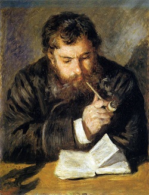

周劍輝 (Jiann Jou) email：
請按這裡。
電腦博士，美國賓州州立大學，1980
數學碩士，美國賓州州立大學，1976
數學學士，國立清華大學，1971
2001年撰寫好讀程式，並創辦好讀網站。
目前在美國加州從事電腦軟體設計研發。
Q1. 好讀網站成立近十年了,也沒有營利的目的,校正文章也花了您很多時間,請問是甚麼樣子的動力讓你繼續經營下的?
A1. 看不完的雜書，解決不完的中文電子書問題，機緣巧合遇上了，我能做，又是我愛做的事，怎能不做？不做，一晃十年也是過了。做了，看看今日的好讀網站，以我一己微小的力量，卻造福了這麼多人，未來更不用說了，實在是值得。
今日好讀網站的規模，是與讀友互動不斷更新改進而演變出來的。我的本業是軟體研發。最初，只是一時興起，為自己寫了一個直式閱讀軟體，希望能手持PDA看書。完成之後，覺得還頂方便用的，就取名叫好讀，提供大家免費使用。
若沒人愛用好讀，也就罷了。偏偏有很多人愛用，我才碰上了一個大問題。原先以為網路上電子書很多，轉成好讀電子檔就可讀了，試讀了許多本，卻發現本本簡字錯字漏字滿篇，怎麼能讀？為了解決這個問題，當時唯一的辦法，就是我自己帶頭，逐本整理校正，反正我也喜愛閱讀。這一做，就是幾年。
之間，也有讀友建議軟體收費，我也遵照辦理了一陣，但有了期望，就有失望，入不敷出久了，就不得不同意溫世仁說的「電子書已死」，明確的意思是賺不了錢。賺不了錢怎麼玩？溫世仁是生意人，據說投資電子書和「明日書城」賠了十幾億，他當然不能也不想再玩下去。
我呢？和軟體、書及讀友都建立了感情，很難說不玩就不玩了。哪怎麼辦呢？結論只有一個，就是不期望好讀網站會賺錢，路才走得遠。但是不賺錢，路要怎麼走？最好的解決方法也只有一個，就是另謀生路，挪出部分的時間重執本業，為人研發軟體。沒想到這個改變，對好讀網站的影響反而是正面的。
因為無法再全力投入，有一陣子，每個月我只能整理製作一兩本書。等不及的讀友，就自己整理製作愛書，我也將重點移至製書程式，改了幾個版本，方便更多的讀友製書。今日的好讀網站每月新增好書幾十本，幾乎都是讀友整理製作的，種類不但多，品質也較有保證，大半我僅需稍微調整一下排版，加上日期，就可放上。
Q2. 在眾多讀者的回饋當中,甚麼讓您最感動?
A2. 收到讀友花了半年一年，掃描原書精心校正的絕版書。印象最深刻的是素昧平生的兩位讀友，一在大陸一在台灣，兩岸合力，參照港版原書逐字校對的
《舊版射鵰英雄傳》。
Q3. 邀請朋友在網站上寫專欄的動機來由?
A3. 雖然說專欄設在好讀網站，就有讀友會看，好的專欄也會帶來更多的讀友，對大家都好，但好讀網站之會有專欄，純屬因緣際會，不是什麼深謀遠慮。
第一個專欄是薛中鼎專欄，老薛是我的清華老同學，但非我同類，大學時和他沒說過幾句話。倒是畢業後，居然在美國及台灣都曾同處一地，深交了幾年。後來他去北京工作了七年，再回台灣教書，我們又見了面。他的大陸經驗令他有一肚子的鳥氣，他想寫成書，也在報章雜誌發表了一些文章。我這才想到何不就在好讀網站上寫專欄？報章雜誌隔天隔月就沒人看了，寫書何時能寫完何時能出版，也很難掌握，何不打鐵趁熱，想到什麼就寫什麼？文章只要發表在好讀網站隨時都可能有人看。老薛和我原本都是學數學的，從來不知他這麼有學問，後來幫他製作專欄，陸續拜讀了他的大作才知道。
第二個專欄是黃河渡。好讀網站的頭四本書是黃河的作品，也是他授權放的。在薛中鼎專欄成立近四個月，收到黃河寄來的一篇
《澳大利亞驚魂記》，將他旅遊所受到的鳥氣寫得既生動又幽默，因而想到邀請他寫專欄。他的答覆是暫無必要。沒想到七個月後，黃河來信，問我可否幫他成立黃河渡專欄。黃河渡的網頁我是特別用了點心，製作成前所未見的直排。
Q4. 關於"閱讀" 您的看法是?
A4. 每個人都喜歡聽故事，卻不一定都喜歡看書。像我從小就喜歡看雜書，我的弟弟卻看到書就一個頭兩個大。由同樣一個家庭出來的，卻有這樣的差異，我也想不出為什麼？
也許有些人什麼書都看，有些人只看某類的書，有些人卻是什麼書都不看。
我個人覺得閱讀是平日生活眾多選項中的一個，養成習慣就成樂趣，沒書可看就很痛苦。
喜歡閱讀，除了興趣，就是有方便的環境。我小時沒錢買書，但家裡附近有個小圖書館及幾家書店，讓我沉迷其中，什麼書都翻著看。念大學時，沒這麼方便，就不時買一些雜書回宿舍看。在美國求學教書及工作的前十幾年，見不著也買不到中文書，可以說沒看過幾本雜書。後來，終於發現了最方便的環境，圖書館，就在不遠，便開始看英文小說，每週至少看一本。再看中文小說，是回台工作的十幾年，大量閱讀則是在好讀網站建置之後。
我相信由於好讀網站的方便，讓全世界各地的讀友，隨時有書可閱讀，應該是好讀網站的最大貢獻之一。
Q5. 承接上提,您的專業是屬科技產業,而網站內的文章多於文學創作,閱讀文學作品對您的幫助又是為何?
A5. 有些人工作壓力大，認為看些不用腦筋的書，可以紓解壓力。我認為看雜書，可以換個腦袋。我是做軟體研發的，工作是樂趣不是壓力，通常問題解不出來，或到了某些時間，我就放下工作，改看小說，不再去想原來的問題。看了一段時間，或看完書睡了一覺，再來想原來的問題，常常不要幾秒鐘就解決了。
Q6. 關於您提到的定位及未來發展是?
A6. 好讀網站目前是線上圖書館，以文字電子書為主。未來我想增加有聲書，讓讀友能唸書給其他讀友聽。
至於好讀網站的定位，我的期望是增加更多的機制，讓更多的讀友能參與，讓好讀網站成為更完善的文化資產維護平台。
Q7. 研發電子書軟體,您花了多久時間?目前已經改版過幾次了?
A7. 中文直排、操作簡單方便、閱讀舒適是我的主要設計理念。好讀第一版只花了我十天。之後的幾年中，僅小改了六、七次，增加了一些小功能，及不同作業平台的支援，所花的時間並非很多。
花我時間最多的是好讀製書程式，原先只是我給我自己用，馬虎一點沒關係。後來提供給讀友使用，功能及方便性就得不斷地增加改進。
目前我正在重新規劃好讀電子書的萬國碼規格。支援萬國碼的製書程式已在撰寫測試之中，完成之後，所有的好讀版本都會改版支援萬國碼，也會增加更多作業平台的版本。除此之外，我也打算將規格完整公布，讓有能力及興趣的讀友也能依自己的需求撰寫閱讀程式。
(採訪稿，2010/3/8 提供給《書香遠傳》月刊的記者耿詩婷)